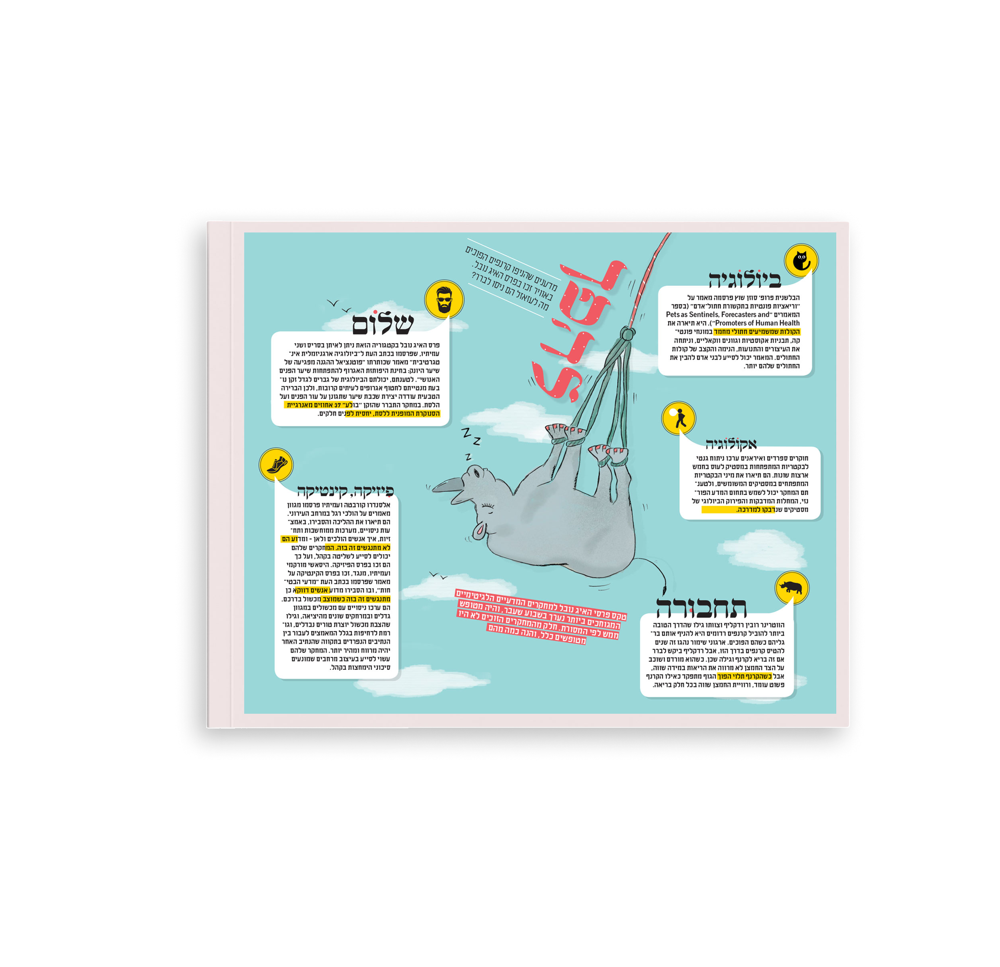
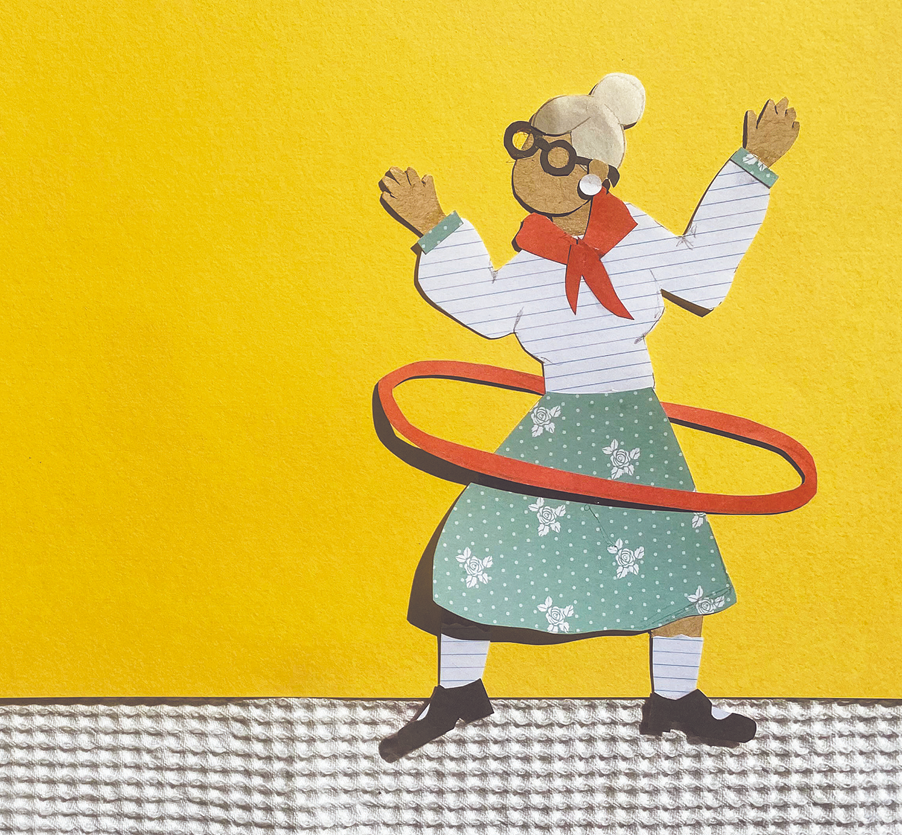
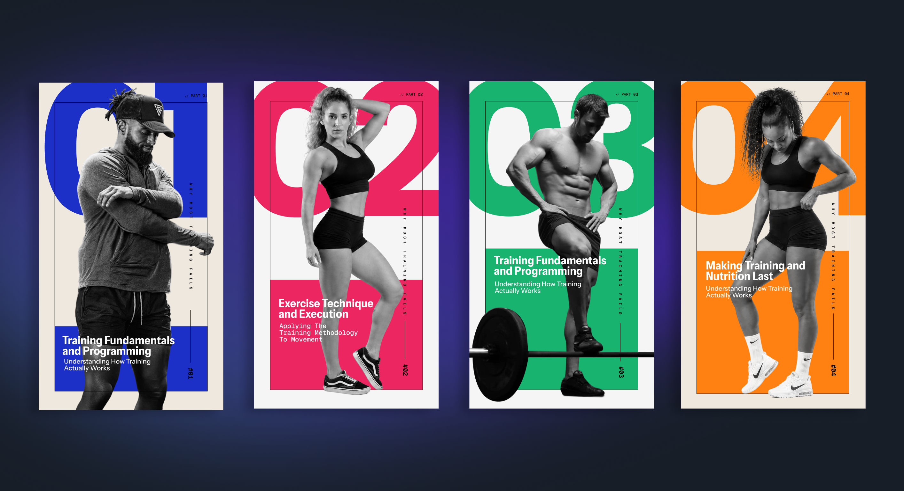
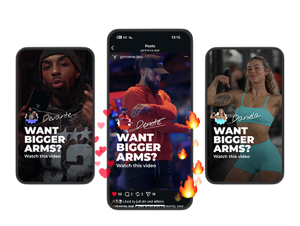
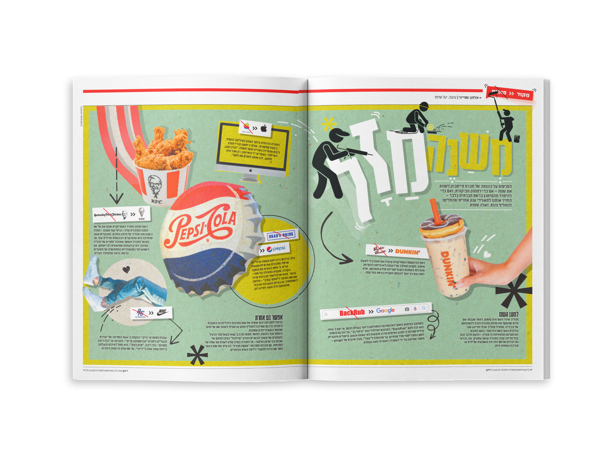
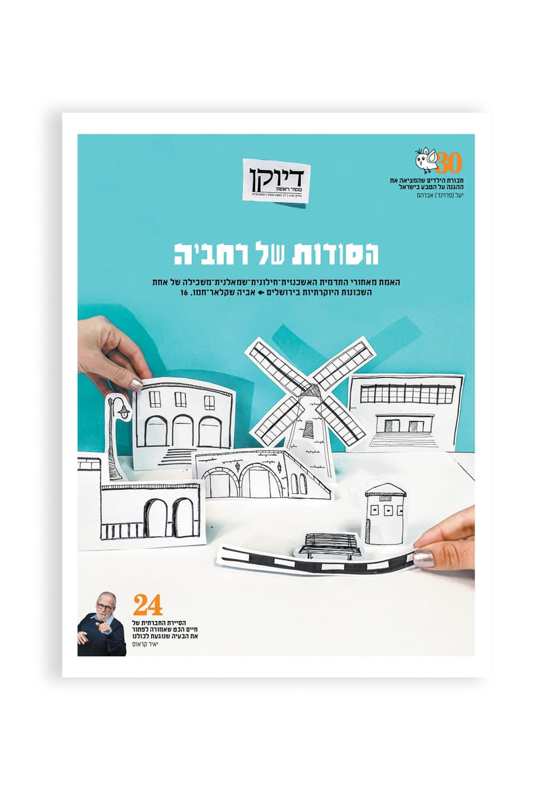
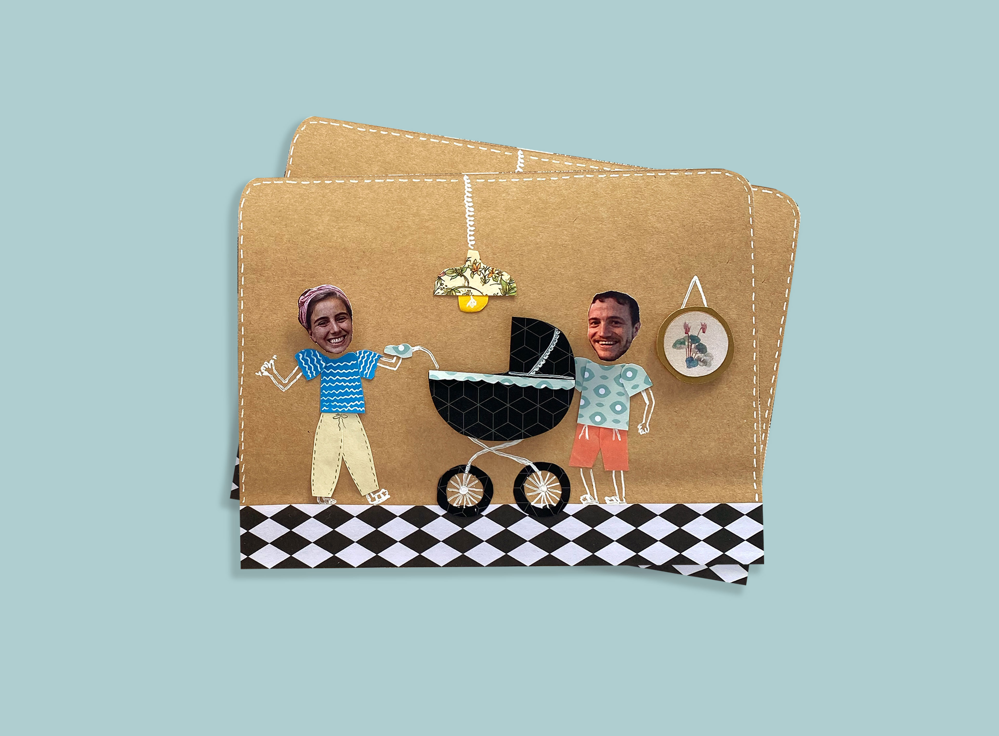
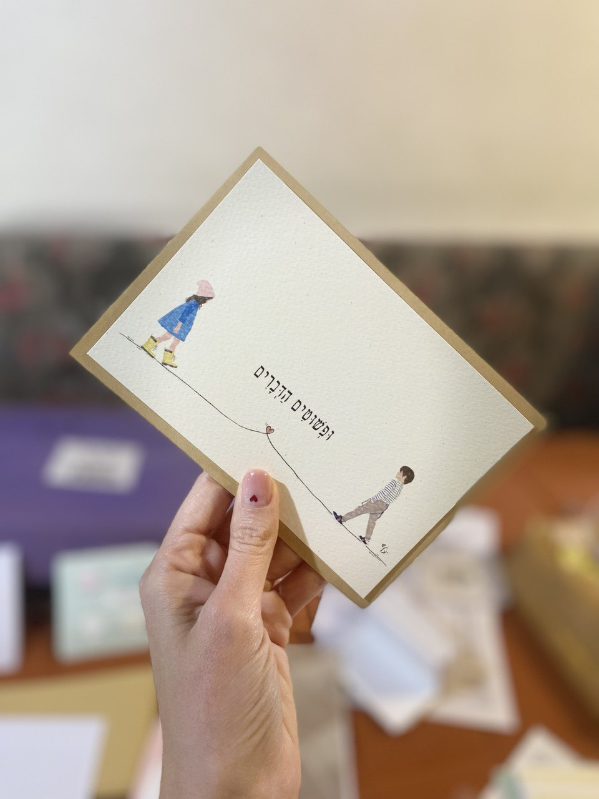

01
Fitness22 — ShareKit
Social sharing feature for fitness and running apps — 100 custom stickers designed in collaboration with AI, covering every workout mood and milestone.
Marketing & Creative Designer
Infographics · Editorial · Branding · UX/UI · Illustration
View Selected WorkSelected Work
Social sharing feature for fitness and running apps — 100 custom stickers designed in collaboration with AI, covering every workout mood and milestone.

Full editorial spread and infographic design — published in Makor Rishon

Editorial illustration and feature design — paper-cutout artwork for a magazine spread celebrating active aging

Full ebook design for an advanced fitness training program — structured chapter architecture, bold editorial layout, and a visual identity built around performance.

Social posts campaign for the Gymverse fitness app — turning happy users into a wall of motivation.

Closing spread of Diukan magazine in Makor Rishon — a weekly infographic feature translating each issue's lead story into a single, richly illustrated visual essay.

Website design for the award-winning running coach app — UX, UI and visual storytelling that helps beginners go from couch to 5K.

Cover design for a Jerusalem neighbourhood feature — paper-cut illustration with editorial layout

Handcrafted greeting card design — paper cutout figures and tactile storytelling

Brand identity and signage design for a boutique modern hat label

Hand-illustrated greeting card — two figures, one heart, printed on tactile fine art paper.
Quick line drawing in pen over newsprint — a personal warm-up turned into a series.
About
I'm a marketing and creative designer with over 13 years of experience turning complex ideas into clear, beautiful visual stories.
My background spans editorial design, infographics, brand identity, illustration, and digital UX/UI. For 6 years I was the visual voice of Makor Rishon — designing editorial content, art-directing the portrait supplement, and authoring a weekly infographic column. I now bring that editorial precision to mobile app marketing, creative campaigns, and AI-assisted design workflows.
I work independently, with strong attention to detail, a sharp visual instinct, and the ability to deliver under tight deadlines.
Experience
Fitness22
Led all marketing and creative design for a global fitness app studio. Produced campaign assets, app store visuals, social media content, and designed 100+ custom stickers using AI-assisted workflows. Delivered cross-platform creative at scale.
Makor Rishon Newspaper
Full editorial design, print production, and art direction of the weekly portrait supplement. Authored Focus — a weekly infographic column making current affairs visually accessible.
Speedia Design Studio
Full-time role covering branding, advertising, print collateral, and identity design.
Copy Color Design Studio, Jerusalem
Branding, menus, roll-ups, large-format print, and promotional materials.
Full work history, references, and portfolio available on request.
Download CVGet in Touch
Open to freelance projects, full-time positions, and collaborations.